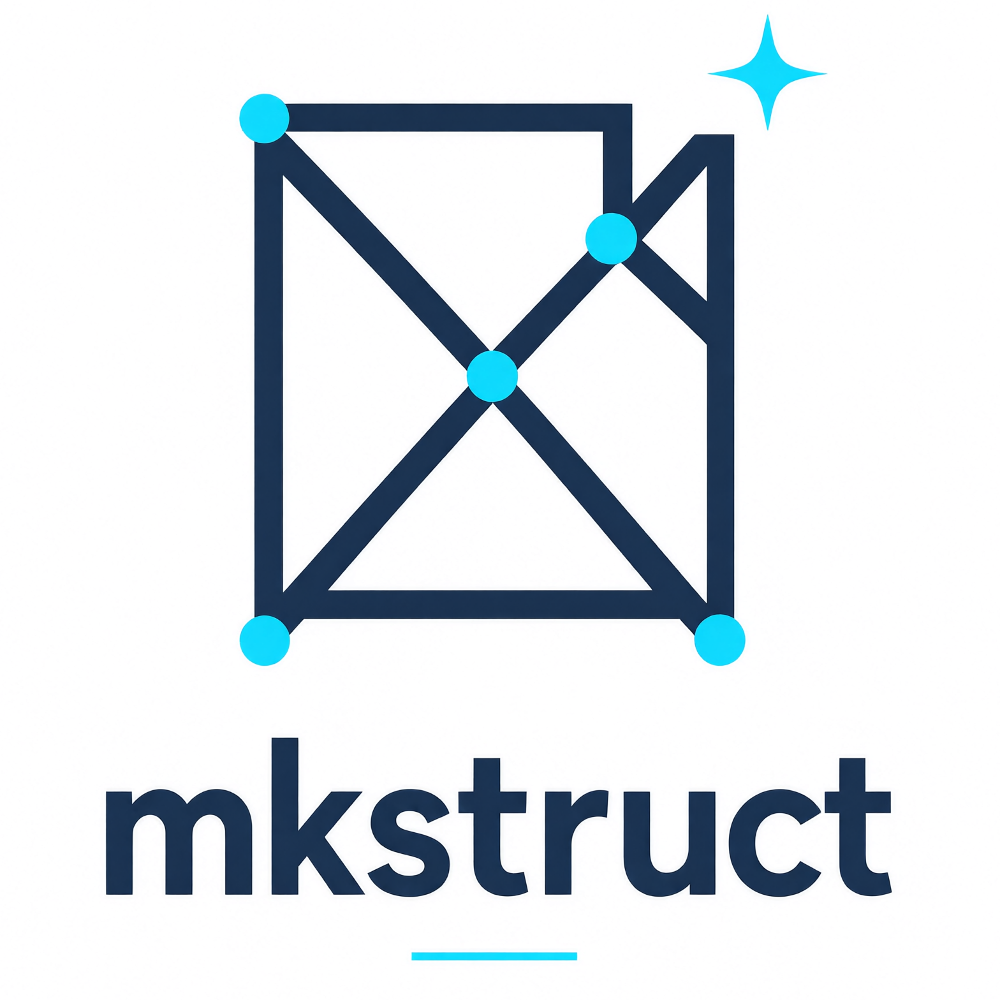

mkstruct
Windows 独立版根据树形结构文本，一键创建目录与空文件的项目骨架生成器
它做什么
mkstruct 接收 tree 命令风格的目录树，或设计文档里常见的树形结构文本，在指定位置批量创建出完整的目录和文件骨架。它省去手工 mkdir / touch 的重复劳动，适合在写代码之前先搭出项目结构。
它提供 CLI 与 GUI 两种形态，共享同一套解析与创建逻辑，行为完全一致。它不生成文件内容，不替代脚手架工具，也不执行任何代码；只负责从结构文本到磁盘骨架这一步。
特性
- 三种输入方式 结构文本文件、命令行字符串、标准输入 / 管道 / 剪贴板。
-
自动识别层级
支持
├──、└──、│、--、空格缩进等多种树形画法，缩进宽度自动推断。 -
目录以 / 结尾
带
/结尾或有子节点的节点视为目录，其余视为文件，Makefile、LICENSE这类无扩展名文件也能被正确识别。 -
忽略行内注释
空格 +
#之后的内容会被剥离，方便直接复用带说明文字的结构文本。 -
简写自动展开
RtmpDataSource.h/.cpp会自动创建RtmpDataSource.h和RtmpDataSource.cpp两个文件。 -
预览与写入分离
--dry-run/ GUI「预览」不写磁盘；正式写入前必须确认。 -
幂等安全
已存在的文件不会被覆盖，只会标记为
skip。 - 零第三方依赖 仅使用 Python 标准库。
安装
- Windows 独立版（推荐）：从 Releases 下载
mkstruct.exe（CLI）或mkstruct-gui.exe（GUI），免安装 Python，双击即用。 - 从源码运行：需要 Python 3.8+，
git clone后python mkstruct.py --help（CLI）或python gui.py（GUI）。mkstruct.py依赖同目录的core.py，不能单独拷走单个文件。 - 自行打包 exe：参见仓库 DEVELOPMENT.md 的「打包」一节。
命令行（CLI）使用
CLI 适合脚本化、批量、可重复的场景：结构文本存在文件里，一条命令生成骨架，结果可以纳入版本控制或 CI。
基本语法
mkstruct <输入> -d <目标目录> [--dry-run]<输入> 可以是结构文本文件路径、直接写在命令行上的结构字符串，或从标准输入传入（- 或管道）。-d 指定骨架创建到哪个目录，目录不存在时会自动创建。--dry-run 只解析并打印将要创建的内容，不写磁盘。
从文件输入
准备一个 tree.txt：
myapp/
├── src/
│ ├── main.py
│ └── utils/
│ └── RtmpDataSource.h/.cpp
├── tests/
│ └── test_main.py
├── Makefile
└── LICENSE # 行内注释会被忽略先预览，确认无误再写入：
# 预览：不写磁盘，只打印解析结果
mkstruct tree.txt -d .\out --dry-run
# 正式写入
mkstruct tree.txt -d .\out执行后 .\out\myapp\ 下会得到完整的目录树与空文件，RtmpDataSource.h 与 RtmpDataSource.cpp 由简写自动展开。
从命令行字符串输入
临时搭一个小骨架时，不必先建文件：
mkstruct "src/ ├── index.js └── app.js" -d .\demo --dry-run从标准输入 / 管道输入
适合把其他工具的树形输出直接接进来：
# 管道
type design.txt | mkstruct - -d .\out
# 或从剪贴板（Windows PowerShell）
Get-Clipboard | mkstruct - -d .\out输出含义
- created：本次新建的目录或文件。
- skip：目标已存在，跳过，不覆盖。
- dry-run：仅预览，所有条目都不会落盘。
各参数的完整说明以 mkstruct --help 为准。
图形界面（GUI）使用
GUI 适合不想碰终端、或需要边看结构边调整的场景。它与 CLI 共用同一套解析与创建逻辑，输出结果一致。
启动
下载 mkstruct-gui.exe 后双击即可运行，无需安装 Python。从源码运行时执行 python gui.py。
使用流程
- 粘贴结构文本：把
tree输出或设计文档里的树形结构粘贴到左侧输入框，也可以直接打开文本文件。 - 实时预览解析：右侧会实时显示解析出的目录 / 文件列表。目录以
/结尾或有子节点识别，其余识别为文件。 - 指定目标目录：选择骨架要创建到哪个位置。
- 点击「预览」：只展示将要创建的内容，不写磁盘。
- 点击「写入」：确认无误后正式创建。已存在的文件会被标记为
skip，不会被覆盖。
注意事项
- 「预览」与「写入」是两步：预览不做任何磁盘操作，写入前务必先预览。
- 不会覆盖已有文件：目标已存在同名文件时直接跳过，不会询问、也不会改动其内容。
- 行内注释会被忽略：粘贴带
# 说明的结构文本可以直接使用，不需要手工清理。 - 简写自动展开：
a.h/.cpp这类写法会在预览里显示为两个独立文件。
设计边界
mkstruct 只创建目录和空文件，不写入文件内容，不生成模板代码，不处理文件权限或符号链接。如果目标路径已存在文件，它会跳过而不是覆盖；如果目标目录不存在，它会按结构创建父目录。需要“文件内容初始化”时，应在骨架创建后由脚手架或模板工具接手。